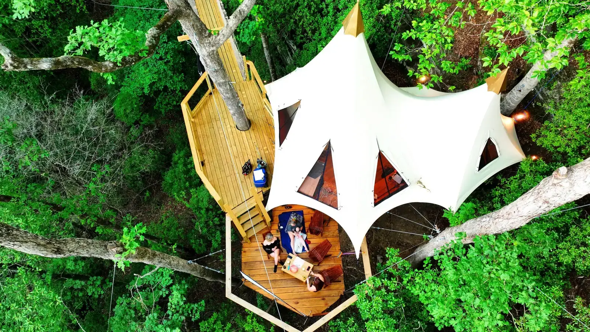

From Atlanta
Eloping from Atlanta
From Atlanta, it's just over an hour to Dahlonega, Georgia. There, a treehouse sixty feet up waits at the far end of a hundred-foot rope bridge.

The drive
Just over an hour north of Atlanta
We're in the foothills above Dahlonega, just over an hour north of Atlanta. Detailed directions come with your booking confirmation.
Most people don't have two or three weeks to paddle into the wilderness and set up camp. They have a weekend. Maybe two nights between the obligations that never stop pulling at them. They want the silence, the forest and the feeling of being truly away, without the time, the gear or the trail miles to earn it the hard way.
That's what Loxley was designed to solve. Not a hotel room with a view. A night in the forest that changes how you feel when you drive home on Sunday.
Without the city
No ballrooms. No receiving line.
No ballrooms. No banquet chairs. No receiving line. Just two people, an ancient forest, and a ceremony as dramatic as the love that brought you here.
Loxley Forest is a private home on forty-two private acres, and you are coming as our overnight guests. Your ceremony is an experience we host as part of your stay.
Say your vows on the bridge, beside the Fire Circle on the forest floor, or on the private deck of your treehouse, sixty feet in the air. The Crossing and The Elevation include our signature rope bridge ceremony.
“This was easily one of our most memorable stays! This is a custom treehouse personally designed, built, and meticulously cared for by the hosts.”

The bridge
One hundred feet between two white oaks
A hundred feet long. Sixty feet up. It hangs between two white oaks over the holler, strung with small warm lights that come on at dark and burn for two or three hours. The planks are white oak, salvaged and milled from standing dead trees on this land. A crew of riggers from North Carolina strung its first cables.
It sways. That's by design. The ropes are chest-high and the planks are solid. It's rated for eight people at one time, everyone counted, and that number is the engineer's, not ours.
Every guest crosses it. It isn't optional. It's the way home.

Who we are
Built by the family that lives here
We're Mick and Livy. We found this land on a cold January morning, with fog still burning off the valley, down a driveway lined with mountain laurel. Two hundred feet in, before we'd even seen the house, Livy said, “This is it. Come on.”
Mick saw the engineering. Livy saw the experience. Every beam was carried four hundred feet down the mountain by hand, because we loved the forest too much to bring in machines. Mick built much of the framing himself. Livy insisted on a full bathroom sixty feet up, because she wasn't climbing down a tree in the middle of the night, and neither should anyone else.
We live here, with two little girls who think rope bridges are a normal way to get home. Book direct and you deal with the family who built it.
Good to know
The facts, with their sources
Dahlonega sits in the foothills of the Blue Ridge Mountains, only an hour north of Atlanta.
Dahlonega-Lumpkin County Visitors Bureau, read October 29, 2026
Dahlonega is the county seat of Lumpkin County, in the foothills of the North Georgia mountains, approximately 70 miles north of Atlanta.
City of Dahlonega, read October 29, 2026
Springer Mountain, the southern end of the Appalachian Trail, is 99 miles from Atlanta.
Appalachian Trail Conservancy, read October 29, 2026
Questions
Everything you're wondering
How long is the drive from Atlanta?
Just over an hour to Dahlonega. Detailed directions come with your booking confirmation. Then you park and walk in under the trees.
What if one of us is afraid of heights?
The bridge is built to feel safe. The ropes are chest-high, the planks are solid, and the sway is gentle. A thirty-foot rope bridge comes first, as a warm-up.
Can we come up on a weekday?
Absolutely, and we'll love you for it. Weekday ceremonies get the best light and the quietest forest.
Can we bring our dog?
Yes, up to two well-behaved dogs, with no fee; dogs only. The bridge sways and sits sixty feet up, so if you're not sure how your dog will take it, write to us first.
Inquire
Your marriage deserves a beginning this dramatic
Tell us the day you have in mind. A date, or just a month. How many of you. What it's for, in your own words. We answer fast.
Prefer to talk? Call us at 706-502-4823 or email stay@loxleyforest.com
Read on